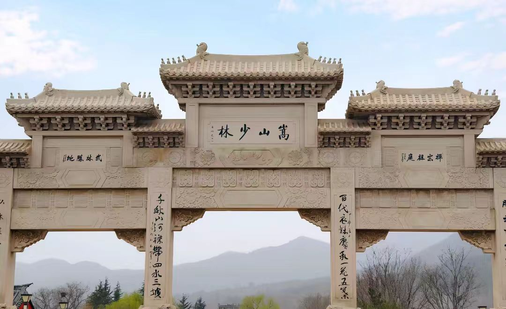

传奇：嵩山少林寺位于河南省登封市嵩山少室山五乳峰下，建于北魏太和十九年（495年），是孝文帝为安顿印度高僧跋陀尊者而建。因坐落于少室山密林之中，故名"少林寺"。是中国佛教禅宗祖庭和中国功夫的发源地，有"天下第一名刹"之誉。2010年8月1日，包含少林寺在内的"天地之中"历史建筑群被联合国教科文组织列入《世界遗产名录》。
核心看点：
游览攻略：
交通信息：少林寺位于河南省登封市嵩山。从郑州出发：①汽车：郑州中心站、客运总站有直达少林寺的旅游专线车，车程1.5小时；②火车：到登封站，转乘8路公交到少林寺；③自驾：经郑少洛高速到登封西出口，按路标行驶。从洛阳出发：汽车约1小时。景区内有电瓶车，可到塔林、初祖庵、达摩洞。周边有嵩阳书院、中岳庙、观星台等"天地之中"遗产点，建议组合游览。
建寺缘起：北魏太和十九年（495年），孝文帝为安顿印度高僧跋陀（佛陀扇多，又称"跋陀罗"）尊者，在少室山建寺，取名"少林寺"。跋陀在寺内翻译佛经，传授小乘佛教。北魏正光元年（520年），印度高僧菩提达摩渡海来到广州，后至南京，因与梁武帝话不投机，一苇渡江，北上少林寺，在五乳峰山洞里面壁九年，创立中国禅宗，被尊为禅宗初祖。
隋唐时期：隋文帝开皇年间（581-600年），赐少林寺柏谷坞庄田一百顷，寺院经济壮大。唐初，少林寺僧助唐太宗平定王世充有功，受朝廷嘉奖，获赐田地，特许养僧兵五百。自此少林寺以武功闻名天下。唐代，少林寺成为禅宗重要道场，有"禅宗祖庭"之誉。唐高宗、武则天多次驾临，拨款修寺。
宋金元时期：宋代，少林寺禅宗兴盛。北宋元祐年间（1086-1094年），曹洞宗传入少林寺。金代，少林寺有僧众两千余人。元初，世祖忽必烈命福裕和尚住持少林寺，统辖嵩岳诸寺。福裕主持大修寺院，创建钟楼、鼓楼，增建殿宇，形成"五派同流，千僧聚会"的盛况。
明代：明代是少林寺的鼎盛时期。朝廷多次拨款修寺，增建殿堂。嘉靖年间（1522-1566年），少林寺僧参加抗倭战争，屡立战功。万历年间（1573-1620年），朝廷颁《大藏经》给少林寺。明代少林寺有僧兵三千，习武成风，形成系统的少林功夫体系。明末农民起义，少林寺遭兵火，损失惨重。
清代民国：清初，朝廷限制佛教，少林寺衰落。康熙四十三年（1704年），康熙皇帝为少林寺题写匾额。雍正十三年（1735年），雍正帝拨款重修少林寺，形成现存基本格局。民国时期，战乱频仍，少林寺进一步衰落。1928年，军阀石友三火烧少林寺，大雄宝殿、藏经阁等重要建筑被焚，大量文物、经书被毁。
新中国成立后：新中国成立后，政府拨款修复少林寺。1979年，作为宗教活动场所重新开放。1982年，电影《少林寺》上映，引发全球"少林热"。1983年，少林寺被列为全国重点佛教寺院。1995年，释永信方丈发起"少林寺1500周年庆典"，少林寺走向复兴。2010年，少林寺作为"天地之中"历史建筑群的一部分列入《世界遗产名录》。
总体布局：少林寺常住院坐北朝南，依山而建，沿中轴线有七进院落，总面积约3万平方米。从山门到千佛殿，地势渐高，形成"步步高升"的格局。寺前有溪水（少溪）流过，寺后有五乳峰为靠，符合"背山面水"的风水理念。整个建筑群红墙灰瓦，古朴庄严。
山门建筑：山门建于清雍正十三年（1735年），面阔三间，进深三间，单檐歇山顶，铺绿色琉璃瓦。正门上方悬挂康熙御笔"少林寺"黑底金字匾额，上有"康熙御笔之宝"印。门前有明代石狮一对。山门殿内供弥勒佛、韦驮菩萨，两侧有清代"十三棍僧救唐王""紧那罗王御红巾"壁画。
千佛殿：又称毗卢阁，明代建筑，面阔七间，进深三间，硬山顶。殿内最珍贵的是明代大型壁画《五百罗汉朝毗卢》。壁画高7.5米，长42米，面积约315平方米，绘于明万历年间（1573-1620年）。画面分三层，上层为山林，中层为云海，下层为水浪，五百罗汉姿态各异，栩栩如生。殿内地面有48个脚窝，是武僧练功所留。
塔林建筑：塔林是中国古塔的博物馆。①唐塔：现存2座，为方形单层单檐式，是塔林中最早的塔；②宋塔：现存3座，多为六角形；③金塔：现存10座，形制多样；④元塔：现存48座，多为喇嘛塔式；⑤明塔：现存148座，数量最多，形制最丰富；⑥清塔：现存20座。塔的高低、大小、层级、形制，根据僧人生前佛学造诣、僧阶高低、功德大小而定。
初祖庵：河南省现存最古老的木结构建筑。建于北宋宣和七年（1125年），面阔三间，进深三间，单檐歇山顶。大殿的柱、础、枋、斗拱、藻井等，严格按《营造法式》建造。石柱雕刻精美，有海石榴、卷草、飞禽、伎乐等图案。殿内石供桌下有"一苇渡江"等浮雕。初祖庵是研究宋代建筑的珍贵实例。
建筑特色：少林寺建筑体现中原地区特色。①材料：砖、木、石并用，就地取材；②结构：木构架为主，抬梁式与穿斗式结合；③屋顶：多为硬山、悬山、歇山顶，坡度平缓；④装饰：彩绘、雕刻朴素，不尚奢华；⑤色彩：红墙灰瓦，与青山绿树相协调。少林寺建筑融佛教寺院与中原民居风格于一体。
禅宗祖庭：少林寺是中国禅宗的发源地。①达摩创禅：达摩在少林寺面壁九年，提出"理入""行入"的修行方法，著有《二入四行论》；②慧可断臂：二祖慧可为求法，在立雪亭前断臂明志，得达摩传法；③禅宗传承：从达摩到慧可、僧璨、道信、弘忍、慧能，一花开五叶，形成临济、曹洞、沩仰、云门、法眼五宗。少林寺以曹洞宗为主，倡导"默照禅"。
少林功夫：少林功夫是中国武术的瑰宝。①起源：为强身健体、保护寺院而创；②体系：包括拳术、器械、对练、内功、硬气功等，有套路700余种；③特点：禅武合一，内外兼修，刚柔相济；④代表拳术：罗汉拳、少林拳、少林棍、易筋经、洗髓经等；⑤传承：有严格的师承制度，注重武德培养。少林功夫被列为国家级非物质文化遗产。
少林医学：少林寺在长期习武、行医中形成独特的医学体系。①起源：僧人为治伤而研习医术；②理论：以禅学为指导，注重整体调理；③特色：擅长骨伤科、针灸、推拿，有独特的秘方、膏药；④典籍：《少林寺伤科秘方》《少林真传伤科秘方》等；⑤药局：少林药局创建于金代，是中国最早的医疗机构之一。少林医学是中华传统医学的重要组成部分。
少林艺术：少林寺在建筑、雕塑、绘画、书法等方面成就卓著。①建筑：寺塔、殿堂、亭台等，体现古代建筑艺术；②雕塑：佛像、石狮、石塔雕刻，工艺精湛；③绘画：《五百罗汉朝毗卢》壁画，是明代壁画珍品；④书法：寺内碑刻众多，有唐太宗、苏轼、米芾、赵孟頫等名家作品；⑤音乐：佛教音乐、禅乐，有《少林寺钟谱》等。少林艺术是佛教艺术与中原艺术的融合。
禅修体验：少林寺开展多种禅修活动。①短期禅修：面向游客的"一日禅""三日禅"体验课程；②禅七：每年冬季举办"禅七"，连续七天坐禅；③禅武夏令营：面向青少年的禅武文化体验；④国际禅修：接待外国友人，传播禅文化。禅修内容包括坐禅、行禅、茶禅、农禅等。
文化交流：少林寺积极开展国际文化交流。①海外中心：在美、德、英、澳等国建立少林文化中心；②演出交流：少林功夫表演团出访100多个国家和地区；③学术研究：举办国际禅宗研讨会、少林学研讨会；④影视传播：电影《少林寺》等影视作品，让少林文化走向世界。少林寺成为中华文化的重要名片。
世界遗产价值：2010年8月1日，"天地之中"历史建筑群（包括少林寺、塔林、初祖庵、嵩阳书院、中岳庙、观星台等8处11项）被联合国教科文组织列入《世界遗产名录》。世界遗产委员会评价："这些建筑群以不同的方式表达了'天地之中'的概念，并展示了在近2000年的时间里，中国在建筑和技术领域所取得的成就。其中，少林寺建筑群是佛教禅宗在中国的发源地，对佛教在中国的传播和发展产生了深远影响。"
历史价值：少林寺是1500多年佛教史的见证。①佛教史：从跋陀译经到达摩创禅，从禅宗祖庭到佛教圣地，记录了佛教在中国的传播、发展、演变；②建筑史：从北魏到明清，历代建筑遗存，是研究古代建筑发展史的实物资料；③社会史：反映了佛教与政治、经济、社会的关系，如僧兵制度、寺院经济等；④文化交流史：体现了中印、中日、中韩等佛教文化交流。
建筑价值：少林寺建筑群是中国古代建筑的杰出代表。①塔林：中国现存规模最大、数量最多的古塔群，是古塔建筑的博物馆；②初祖庵：宋代木结构建筑的珍贵实例，是研究《营造法式》的实物；③千佛殿：明代大型壁画，艺术价值极高；④整体布局：依山就势，中轴对称，体现中国传统建筑理念。少林寺建筑是建筑、结构、艺术的完美结合。
文化价值：少林寺是禅宗文化、武术文化、医学文化、艺术文化的综合体。①禅宗文化：禅宗祖庭，对中国哲学、文学、艺术产生深远影响；②武术文化：少林功夫发源地，是中国武术的重要流派；③医学文化：少林医学，是中华医学的组成部分；④艺术文化：建筑、雕塑、绘画、书法等，艺术成就卓著。少林文化是中华文化的重要代表。
科学价值：少林寺蕴含丰富的科学智慧。①建筑科学：木结构技术、砖石技术、抗震技术等；②医学科学：骨伤科诊疗技术、中药学等；③人体科学：功夫训练方法、气功养生等；④环境科学：寺院选址、布局与自然环境的和谐。现代科学可从少林文化中汲取营养，如运动医学、康复医学、心理学等。
保护与传承：少林寺得到有效保护和传承。①法律保护：1963年被列为河南省文物保护单位，1996年列为全国重点文物保护单位；②规划保护：编制《少林寺保护规划》，划定保护区、缓冲区；③工程保护：对古建筑进行维修加固，如1980年代重修大雄宝殿，1990年代维修塔林；④活态保护：保持宗教功能，僧众正常修行，传承禅武医文化；⑤研究展示：成立少林文化研究所，出版《少林学》等著作；⑥国际交流：开展国际文化交流，传播少林文化。少林寺的保护经验，为宗教文化遗产保护提供了借鉴。